library(ameras)
#> Loading required package: nimble
#> nimble version 1.4.2 is loaded.
#> For more information on NIMBLE and a User Manual,
#> please visit https://R-nimble.org.
#>
#> Attaching package: 'nimble'
#> The following object is masked from 'package:stats':
#>
#> simulate
#> The following object is masked from 'package:base':
#>
#> declareIntroduction
All functionality of the package is included in the function
ameras. This vignette demonstrates the basic functionality
and the generated output.
Example data
The included example dataset contains 3,000 individuals with 10
exposure replicates V1-V10, binary covariates
X1 and X2 and risk modifiers M1
and M2, and outcomes of all types (Y.gaussian,
Y.binomial, Y.poisson, status,
time, Y.multinomial, Y.clogit,
and setnr).
data(data, package="ameras")
head(data)
#> Y.gaussian Y.binomial Y.poisson time status setnr Y.clogit
#> 1 -0.32647093 0 0 0.30276565 0 1 0
#> 2 -0.18734036 1 0 0.19735142 1 1 1
#> 3 0.08404044 0 2 0.30276565 0 1 0
#> 4 0.22432504 0 0 0.23602584 1 1 0
#> 5 -0.46317255 0 0 0.30276565 0 2 0
#> 6 -1.41036573 0 0 0.07838133 1 2 0
#> Y.multinomial X1 X2 M1 M2 V1 V2 V3 V4
#> 1 3 0 0 0 1 0.42868043 0.61542487 0.41960219 0.49265549
#> 2 2 1 0 1 0 0.73321154 0.35512449 0.41876478 0.49235658
#> 3 2 0 0 1 0 0.70369712 0.43407408 1.04115924 0.79882088
#> 4 3 0 0 1 0 0.01845324 0.01373367 0.02733303 0.01912686
#> 5 3 1 0 0 0 0.39389441 0.40087181 0.61932032 0.51715526
#> 6 2 1 1 1 0 0.01493158 0.02335143 0.01828983 0.02705350
#> V5 V6 V7 V8 V9 V10
#> 1 0.31363762 0.42218455 0.42464021 0.29630858 0.38211182 0.45751570
#> 2 0.49515815 0.56837639 0.61126842 0.67723449 0.53361810 0.49393510
#> 3 0.66613754 0.72346942 0.64077434 0.79894534 0.98278177 1.06068250
#> 4 0.01917956 0.03056413 0.01536966 0.02135999 0.01548655 0.01596626
#> 5 0.36440322 0.60255525 0.47512525 0.52567606 0.53391825 0.56026531
#> 6 0.02298922 0.02399258 0.01890339 0.02094013 0.02303085 0.02091743There are exposure replicates are in columns
V1-V10, so define dosevars as
follows:
dosevars <- paste0("V", 1:10)Linear regression & displaying output
Now we fit all methods to the data through one function call:
set.seed(12345)
fit.ameras.linreg <- ameras(Y="Y.gaussian", dosevars=dosevars, X=c("X1","X2"), data=data,
family="gaussian", methods=c("RC", "ERC", "MCML", "FMA", "BMA"),
niter.BMA = 5000, nburnin.BMA = 1000, CI=c("wald.orig","percentile"))
#> Note: BMA may require extensive computation time in the order of multiple hours
#> Fitting RC
#> Fitting ERC
#> Fitting MCML
#> Fitting FMA
#> Fitting BMA
#> Defining model
#> Building model
#> Setting data and initial values
#> Running calculate on model
#> [Note] Any error reports that follow may simply reflect missing values in model variables.
#> Checking model sizes and dimensions
#> [Note] This model is not fully initialized. This is not an error.
#> To see which variables are not initialized, use model$initializeInfo().
#> For more information on model initialization, see help(modelInitialization).
#> Compiling
#> [Note] This may take a minute.
#> [Note] Use 'showCompilerOutput = TRUE' to see C++ compilation details.
#> Compiling
#> [Note] This may take a minute.
#> [Note] Use 'showCompilerOutput = TRUE' to see C++ compilation details.
#> running chain 1...
#> |-------------|-------------|-------------|-------------|
#> |-------------------------------------------------------|
#> running chain 2...
#> |-------------|-------------|-------------|-------------|
#> |-------------------------------------------------------|The output is a list object with a call component, and
one component for each method, each being a list:
str(fit.ameras.linreg)
#> List of 8
#> $ call : language ameras(data = data, family = "gaussian", Y = "Y.gaussian", dosevars = dosevars, X = c("X1", "X2"), methods =| __truncated__ ...
#> $ num.individuals: int 3000
#> $ num.replicates : int 10
#> $ RC :List of 8
#> ..$ coefficients : Named num [1:5] -1.362 0.481 -0.519 1.166 1.108
#> .. ..- attr(*, "names")= chr [1:5] "(Intercept)" "X1" "X2" "dose" ...
#> ..$ sd : Named num [1:5] 0.0367 0.0405 0.0497 0.0204 0.0143
#> .. ..- attr(*, "names")= chr [1:5] "(Intercept)" "X1" "X2" "dose" ...
#> ..$ vcov : num [1:5, 1:5] 1.34e-03 -8.36e-04 -4.86e-04 -4.15e-04 1.55e-09 ...
#> .. ..- attr(*, "dimnames")=List of 2
#> .. .. ..$ : chr [1:5] "(Intercept)" "X1" "X2" "dose" ...
#> .. .. ..$ : chr [1:5] "(Intercept)" "X1" "X2" "dose" ...
#> ..$ CI :'data.frame': 5 obs. of 2 variables:
#> .. ..$ lower: num [1:5] -1.434 0.401 -0.616 1.126 1.08
#> .. ..$ upper: num [1:5] -1.29 0.56 -0.421 1.206 1.136
#> ..$ convergence.optim: int 0
#> ..$ counts.optim : Named num [1:2] 509 1
#> .. ..- attr(*, "names")= chr [1:2] "function" "gradient"
#> ..$ loglik : num -4563
#> ..$ runtime : chr "0.3 seconds"
#> $ ERC :List of 8
#> ..$ coefficients : Named num [1:5] -1.361 0.48 -0.519 1.165 1.106
#> .. ..- attr(*, "names")= chr [1:5] "(Intercept)" "X1" "X2" "dose" ...
#> ..$ sd : Named num [1:5] 0.0366 0.0404 0.0497 0.0204 0.0142
#> .. ..- attr(*, "names")= chr [1:5] "(Intercept)" "X1" "X2" "dose" ...
#> ..$ vcov : num [1:5, 1:5] 1.34e-03 -8.34e-04 -4.85e-04 -4.14e-04 1.53e-06 ...
#> .. ..- attr(*, "dimnames")=List of 2
#> .. .. ..$ : chr [1:5] "(Intercept)" "X1" "X2" "dose" ...
#> .. .. ..$ : chr [1:5] "(Intercept)" "X1" "X2" "dose" ...
#> ..$ CI :'data.frame': 5 obs. of 2 variables:
#> .. ..$ lower: num [1:5] -1.433 0.4 -0.616 1.125 1.078
#> .. ..$ upper: num [1:5] -1.289 0.559 -0.421 1.205 1.134
#> ..$ convergence.optim: int 0
#> ..$ counts.optim : Named num [1:2] 546 9
#> .. ..- attr(*, "names")= chr [1:2] "function" "gradient"
#> ..$ loglik : num -4559
#> ..$ runtime : chr "121.2 seconds"
#> $ MCML :List of 8
#> ..$ coefficients : Named num [1:5] -1.28 0.484 -0.517 1.079 1.138
#> .. ..- attr(*, "names")= chr [1:5] "(Intercept)" "X1" "X2" "dose" ...
#> ..$ sd : Named num [1:5] 0.0371 0.0416 0.0511 0.0199 0.0147
#> .. ..- attr(*, "names")= chr [1:5] "(Intercept)" "X1" "X2" "dose" ...
#> ..$ CI :'data.frame': 5 obs. of 2 variables:
#> .. ..$ lower: num [1:5] -1.353 0.402 -0.617 1.04 1.109
#> .. ..$ upper: num [1:5] -1.207 0.565 -0.417 1.118 1.167
#> ..$ vcov : num [1:5, 1:5] 1.38e-03 -8.83e-04 -5.14e-04 -3.98e-04 -1.91e-08 ...
#> .. ..- attr(*, "dimnames")=List of 2
#> .. .. ..$ : chr [1:5] "(Intercept)" "X1" "X2" "dose" ...
#> .. .. ..$ : chr [1:5] "(Intercept)" "X1" "X2" "dose" ...
#> ..$ convergence.optim: int 0
#> ..$ counts.optim : Named num [1:2] 555 7
#> .. ..- attr(*, "names")= chr [1:2] "function" "gradient"
#> ..$ loglik : num -4646
#> ..$ runtime : chr "0.7 seconds"
#> $ FMA :List of 6
#> ..$ coefficients : Named num [1:5] -1.28 0.484 -0.517 1.079 1.138
#> .. ..- attr(*, "names")= chr [1:5] "(Intercept)" "X1" "X2" "dose" ...
#> ..$ sd : Named num [1:5] 0.0373 0.0418 0.0512 0.0202 0.0147
#> .. ..- attr(*, "names")= chr [1:5] "(Intercept)" "X1" "X2" "dose" ...
#> ..$ CI :'data.frame': 5 obs. of 2 variables:
#> .. ..$ lower: num [1:5] -1.353 0.402 -0.618 1.04 1.109
#> .. ..$ upper: num [1:5] -1.206 0.565 -0.417 1.119 1.166
#> ..$ included.replicates: int [1:10] 1 2 3 4 5 6 7 8 9 10
#> ..$ included.samples : int 100006
#> ..$ runtime : chr "1.4 seconds"
#> $ BMA :List of 7
#> ..$ coefficients : Named num [1:5] -1.28 0.483 -0.517 1.079 1.139
#> .. ..- attr(*, "names")= chr [1:5] "(Intercept)" "X1" "X2" "dose" ...
#> ..$ sd : Named num [1:5] 0.038 0.0424 0.0525 0.0202 0.015
#> .. ..- attr(*, "names")= chr [1:5] "(Intercept)" "X1" "X2" "dose" ...
#> ..$ CI :'data.frame': 5 obs. of 2 variables:
#> .. ..$ lower: num [1:5] -1.351 0.402 -0.623 1.039 1.111
#> .. ..$ upper: num [1:5] -1.208 0.567 -0.417 1.118 1.168
#> ..$ Rhat :'data.frame': 5 obs. of 2 variables:
#> .. ..$ Rhat : num [1:5] 1 1.01 1 1 1.02
#> .. ..$ n.eff: num [1:5] 871 822 800 800 744
#> ..$ samples :List of 2
#> .. ..$ chain1: num [1:400, 1:6] -1.32 -1.27 -1.33 -1.29 -1.33 ...
#> .. .. ..- attr(*, "dimnames")=List of 2
#> .. .. .. ..$ : NULL
#> .. .. .. ..$ : chr [1:6] "(Intercept)" "X1" "X2" "dose" ...
#> .. ..$ chain2: num [1:400, 1:6] -1.3 -1.29 -1.23 -1.3 -1.26 ...
#> .. .. ..- attr(*, "dimnames")=List of 2
#> .. .. .. ..$ : NULL
#> .. .. .. ..$ : chr [1:6] "(Intercept)" "X1" "X2" "dose" ...
#> ..$ included.replicates: int [1:10] 1 2 3 4 5 6 7 8 9 10
#> ..$ runtime : chr "72.7 seconds"
#> - attr(*, "class")= chr "amerasfit"Access the results for e.g. regression calibration as follows:
fit.ameras.linreg$RC
#> $coefficients
#> (Intercept) X1 X2 dose sigma
#> -1.3622239 0.4807463 -0.5187877 1.1660368 1.1075696
#>
#> $sd
#> (Intercept) X1 X2 dose sigma
#> 0.03665711 0.04045137 0.04971981 0.02039612 0.01429864
#>
#> $vcov
#> (Intercept) X1 X2 dose
#> (Intercept) 1.343744e-03 -8.358763e-04 -4.863064e-04 -4.154402e-04
#> X1 -8.358763e-04 1.636314e-03 -1.376614e-05 1.526165e-05
#> X2 -4.863064e-04 -1.376614e-05 2.472060e-03 -2.443289e-05
#> dose -4.154402e-04 1.526165e-05 -2.443289e-05 4.160019e-04
#> sigma 1.547510e-09 -1.113334e-08 8.801421e-09 2.066810e-09
#> sigma
#> (Intercept) 1.547510e-09
#> X1 -1.113334e-08
#> X2 8.801421e-09
#> dose 2.066810e-09
#> sigma 2.044510e-04
#>
#> $CI
#> lower upper
#> (Intercept) -1.4340719 -1.2903760
#> X1 0.4014616 0.5600310
#> X2 -0.6162385 -0.4213368
#> dose 1.1260604 1.2060132
#> sigma 1.0795443 1.1355949
#>
#> $convergence.optim
#> [1] 0
#>
#> $counts.optim
#> function gradient
#> 509 1
#>
#> $loglik
#> [1] -4563.325
#>
#> $runtime
#> [1] "0.3 seconds"For a summary of results, use summary (note that
Rhat and n.eff only apply to BMA results):
summary(fit.ameras.linreg)
#> Call:
#> ameras(data = data, family = "gaussian", Y = "Y.gaussian", dosevars = dosevars,
#> X = c("X1", "X2"), methods = c("RC", "ERC", "MCML", "FMA",
#> "BMA"), CI = c("wald.orig", "percentile"), nburnin.BMA = 1000,
#> niter.BMA = 5000)
#>
#> Total run time: 196.3 seconds
#>
#> Runtime in seconds by method:
#>
#> Method Runtime
#> RC 0.3
#> ERC 121.2
#> MCML 0.7
#> FMA 1.4
#> BMA 72.7
#>
#> Summary of coefficients by method:
#>
#> Method Term Estimate SE CI.lowerbound CI.upperbound Rhat n.eff
#> RC (Intercept) -1.3622 0.03666 -1.4341 -1.2904 NA NA
#> RC X1 0.4807 0.04045 0.4015 0.5600 NA NA
#> RC X2 -0.5188 0.04972 -0.6162 -0.4213 NA NA
#> RC dose 1.1660 0.02040 1.1261 1.2060 NA NA
#> RC sigma 1.1076 0.01430 1.0795 1.1356 NA NA
#> ERC (Intercept) -1.3611 0.03660 -1.4328 -1.2893 NA NA
#> ERC X1 0.4795 0.04041 0.4003 0.5587 NA NA
#> ERC X2 -0.5188 0.04969 -0.6162 -0.4214 NA NA
#> ERC dose 1.1649 0.02038 1.1250 1.2049 NA NA
#> ERC sigma 1.1062 0.01425 1.0783 1.1342 NA NA
#> MCML (Intercept) -1.2803 0.03714 -1.3530 -1.2075 NA NA
#> MCML X1 0.4837 0.04156 0.4022 0.5651 NA NA
#> MCML X2 -0.5171 0.05108 -0.6173 -0.4170 NA NA
#> MCML dose 1.0790 0.01993 1.0400 1.1181 NA NA
#> MCML sigma 1.1378 0.01469 1.1090 1.1666 NA NA
#> FMA (Intercept) -1.2803 0.03732 -1.3534 -1.2065 NA NA
#> FMA X1 0.4837 0.04181 0.4017 0.5652 NA NA
#> FMA X2 -0.5173 0.05124 -0.6183 -0.4172 NA NA
#> FMA dose 1.0792 0.02015 1.0397 1.1187 NA NA
#> FMA sigma 1.1377 0.01467 1.1091 1.1664 NA NA
#> BMA (Intercept) -1.2796 0.03797 -1.3511 -1.2077 1.00 871.00
#> BMA X1 0.4831 0.04240 0.4024 0.5668 1.01 822.00
#> BMA X2 -0.5169 0.05254 -0.6226 -0.4172 1.00 800.00
#> BMA dose 1.0788 0.02024 1.0386 1.1176 1.00 800.00
#> BMA sigma 1.1391 0.01503 1.1108 1.1685 1.02 744.00To extract model coefficients and compare between methods, use
coef:
coef(fit.ameras.linreg)
#> RC ERC MCML FMA BMA
#> (Intercept) -1.3622239 -1.3610557 -1.2802532 -1.2803273 -1.2796163
#> X1 0.4807463 0.4795308 0.4836506 0.4836869 0.4830670
#> X2 -0.5187877 -0.5188299 -0.5171452 -0.5173188 -0.5169488
#> dose 1.1660368 1.1649227 1.0790214 1.0791951 1.0787855
#> sigma 1.1075696 1.1062486 1.1377732 1.1377321 1.1391166To produce traceplots and density plots for BMA results, use
traceplot:
traceplot(fit.ameras.linreg)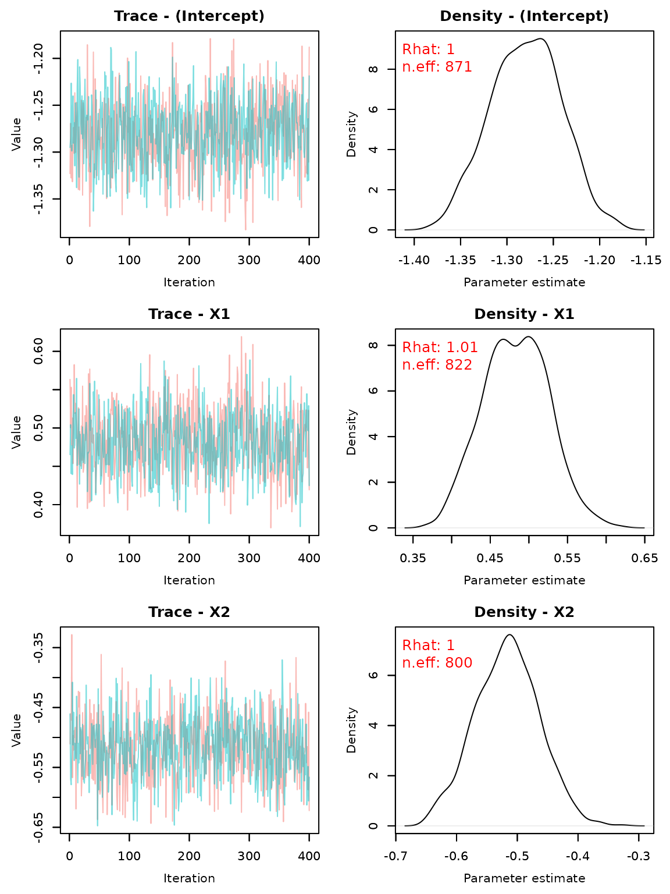
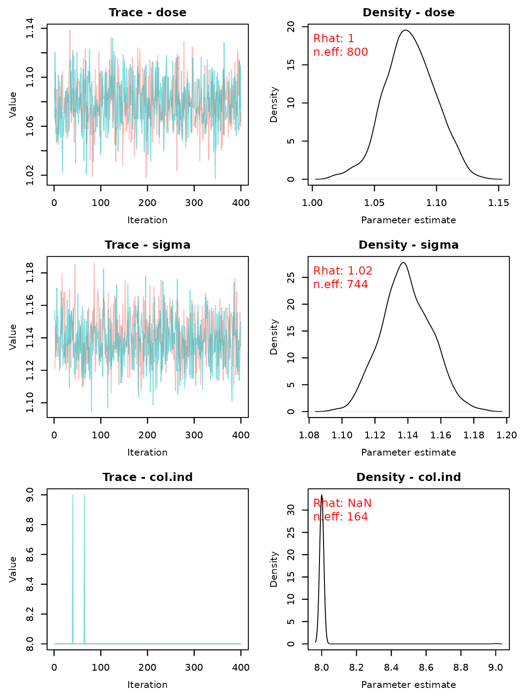
Logistic regression
To fit a logistic regression model, the syntax is very similar.
However, ameras offers three functional forms for modeling
the exposure-outcome relationship. Here, we will illustrate the standard
exponential relationship doseRRmod="EXP". For more
information, see the vignette Relative
risk models.
First, we fit models including a quadratic exposure term by setting
deg=2.
set.seed(33521)
fit.ameras.logreg <- ameras(Y="Y.binomial", dosevars=dosevars, X=c("X1","X2"), data=data,
family="binomial", deg=2, doseRRmod = "EXP",
methods=c("RC", "ERC", "MCML", "FMA", "BMA"), niter.BMA = 5000,
nburnin.BMA = 1000, CI=c("wald.orig","percentile"))
#> Note: BMA may require extensive computation time in the order of multiple hours
#> Fitting RC
#> Fitting ERC
#> Fitting MCML
#> Fitting FMA
#> Fitting BMA
#> Defining model
#> Building model
#> Setting data and initial values
#> Running calculate on model
#> [Note] Any error reports that follow may simply reflect missing values in model variables.
#> Checking model sizes and dimensions
#> [Note] This model is not fully initialized. This is not an error.
#> To see which variables are not initialized, use model$initializeInfo().
#> For more information on model initialization, see help(modelInitialization).
#> Compiling
#> [Note] This may take a minute.
#> [Note] Use 'showCompilerOutput = TRUE' to see C++ compilation details.
#> Compiling
#> [Note] This may take a minute.
#> [Note] Use 'showCompilerOutput = TRUE' to see C++ compilation details.
#> running chain 1...
#> |-------------|-------------|-------------|-------------|
#> |-------------------------------------------------------|
#> running chain 2...
#> |-------------|-------------|-------------|-------------|
#> |-------------------------------------------------------|
#> Warning in ameras.bma(family = family, dosevars = dosevars, data = data, :
#> WARNING: Potential problems with MCMC convergence, consider using longer chains
summary(fit.ameras.logreg)
#> Call:
#> ameras(data = data, family = "binomial", Y = "Y.binomial", dosevars = dosevars,
#> X = c("X1", "X2"), methods = c("RC", "ERC", "MCML", "FMA",
#> "BMA"), deg = 2, doseRRmod = "EXP", CI = c("wald.orig",
#> "percentile"), nburnin.BMA = 1000, niter.BMA = 5000)
#>
#> Total run time: 142 seconds
#>
#> Runtime in seconds by method:
#>
#> Method Runtime
#> RC 0.3
#> ERC 80.5
#> MCML 1.0
#> FMA 2.9
#> BMA 57.3
#>
#> Summary of coefficients by method:
#>
#> Method Term Estimate SE CI.lowerbound CI.upperbound Rhat n.eff
#> RC (Intercept) -0.94461 0.08409 -1.109439 -0.77979 NA NA
#> RC X1 0.44552 0.07667 0.295254 0.59579 NA NA
#> RC X2 -0.33376 0.09601 -0.521945 -0.14557 NA NA
#> RC dose 0.37904 0.10388 0.175441 0.58265 NA NA
#> RC dose_squared 0.01943 0.02750 -0.034468 0.07334 NA NA
#> ERC (Intercept) -0.93189 0.08533 -1.099136 -0.76464 NA NA
#> ERC X1 0.44998 0.07678 0.299496 0.60046 NA NA
#> ERC X2 -0.33924 0.09614 -0.527664 -0.15081 NA NA
#> ERC dose 0.33858 0.10745 0.127985 0.54917 NA NA
#> ERC dose_squared 0.03528 0.02841 -0.020409 0.09097 NA NA
#> MCML (Intercept) -0.91147 0.08356 -1.075241 -0.74770 NA NA
#> MCML X1 0.44619 0.07674 0.295784 0.59660 NA NA
#> MCML X2 -0.34431 0.09625 -0.532951 -0.15567 NA NA
#> MCML dose 0.31654 0.10412 0.112472 0.52061 NA NA
#> MCML dose_squared 0.03800 0.02774 -0.016375 0.09237 NA NA
#> FMA (Intercept) -0.91244 0.08386 -1.076771 -0.74789 NA NA
#> FMA X1 0.44619 0.07686 0.295520 0.59764 NA NA
#> FMA X2 -0.34400 0.09627 -0.533249 -0.15610 NA NA
#> FMA dose 0.31871 0.10523 0.114880 0.52709 NA NA
#> FMA dose_squared 0.03735 0.02816 -0.018766 0.09172 NA NA
#> BMA (Intercept) -0.90779 0.08101 -1.056223 -0.74279 1.03 214.00
#> BMA X1 0.44552 0.07775 0.286128 0.59552 1.01 370.00
#> BMA X2 -0.34361 0.09652 -0.529598 -0.15370 1.00 1242.00
#> BMA dose 0.30658 0.09894 0.102541 0.49441 1.08 92.00
#> BMA dose_squared 0.04134 0.02564 -0.007435 0.09729 1.11 105.00
coef(fit.ameras.logreg)
#> RC ERC MCML FMA BMA
#> (Intercept) -0.94461327 -0.93188863 -0.91146831 -0.91243544 -0.90778810
#> X1 0.44552273 0.44997904 0.44619209 0.44619391 0.44552058
#> X2 -0.33375991 -0.33923955 -0.34430935 -0.34400234 -0.34360534
#> dose 0.37904346 0.33857980 0.31654277 0.31870705 0.30657532
#> dose_squared 0.01943381 0.03528262 0.03799845 0.03735107 0.04134337
traceplot(fit.ameras.logreg)
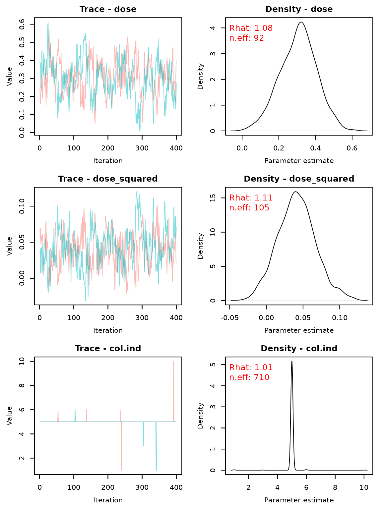
Without the quadratic term (deg=1):
set.seed(3521216)
fit.ameras.logreg.lin <- ameras(Y="Y.binomial", dosevars=dosevars, X=c("X1","X2"), data=data,
family="binomial", deg=1, doseRRmod = "EXP",
methods=c("RC", "ERC", "MCML", "FMA", "BMA"), niter.BMA = 5000,
nburnin.BMA = 1000, CI=c("wald.orig","percentile"))
#> Note: BMA may require extensive computation time in the order of multiple hours
#> Fitting RC
#> Fitting ERC
#> Fitting MCML
#> Fitting FMA
#> Fitting BMA
#> Defining model
#> Building model
#> Setting data and initial values
#> Running calculate on model
#> [Note] Any error reports that follow may simply reflect missing values in model variables.
#> Checking model sizes and dimensions
#> [Note] This model is not fully initialized. This is not an error.
#> To see which variables are not initialized, use model$initializeInfo().
#> For more information on model initialization, see help(modelInitialization).
#> Compiling
#> [Note] This may take a minute.
#> [Note] Use 'showCompilerOutput = TRUE' to see C++ compilation details.
#> Compiling
#> [Note] This may take a minute.
#> [Note] Use 'showCompilerOutput = TRUE' to see C++ compilation details.
#> running chain 1...
#> |-------------|-------------|-------------|-------------|
#> |-------------------------------------------------------|
#> running chain 2...
#> |-------------|-------------|-------------|-------------|
#> |-------------------------------------------------------|
summary(fit.ameras.logreg.lin)
#> Call:
#> ameras(data = data, family = "binomial", Y = "Y.binomial", dosevars = dosevars,
#> X = c("X1", "X2"), methods = c("RC", "ERC", "MCML", "FMA",
#> "BMA"), deg = 1, doseRRmod = "EXP", CI = c("wald.orig",
#> "percentile"), nburnin.BMA = 1000, niter.BMA = 5000)
#>
#> Total run time: 119.6 seconds
#>
#> Runtime in seconds by method:
#>
#> Method Runtime
#> RC 0.2
#> ERC 65.0
#> MCML 0.7
#> FMA 1.6
#> BMA 52.1
#>
#> Summary of coefficients by method:
#>
#> Method Term Estimate SE CI.lowerbound CI.upperbound Rhat n.eff
#> RC (Intercept) -0.9760 0.07190 -1.1169 -0.8351 NA NA
#> RC X1 0.4460 0.07667 0.2957 0.5963 NA NA
#> RC X2 -0.3359 0.09596 -0.5240 -0.1478 NA NA
#> RC dose 0.4471 0.04101 0.3668 0.5275 NA NA
#> ERC (Intercept) -0.9898 0.07216 -1.1312 -0.8483 NA NA
#> ERC X1 0.4533 0.07667 0.3030 0.6036 NA NA
#> ERC X2 -0.3437 0.09609 -0.5320 -0.1554 NA NA
#> ERC dose 0.4632 0.04086 0.3831 0.5433 NA NA
#> MCML (Intercept) -0.9725 0.07154 -1.1127 -0.8323 NA NA
#> MCML X1 0.4469 0.07674 0.2965 0.5973 NA NA
#> MCML X2 -0.3467 0.09618 -0.5352 -0.1582 NA NA
#> MCML dose 0.4498 0.04105 0.3693 0.5302 NA NA
#> FMA (Intercept) -0.9725 0.07138 -1.1131 -0.8333 NA NA
#> FMA X1 0.4472 0.07664 0.2975 0.5981 NA NA
#> FMA X2 -0.3465 0.09602 -0.5347 -0.1580 NA NA
#> FMA dose 0.4497 0.04101 0.3697 0.5302 NA NA
#> BMA (Intercept) -0.9791 0.06869 -1.1235 -0.8492 1.03 386.00
#> BMA X1 0.4555 0.07669 0.3098 0.6074 1.00 482.00
#> BMA X2 -0.3486 0.09589 -0.5382 -0.1523 1.02 882.00
#> BMA dose 0.4523 0.04042 0.3743 0.5292 1.03 518.00
coef(fit.ameras.logreg.lin)
#> RC ERC MCML FMA BMA
#> (Intercept) -0.9759817 -0.9897555 -0.9724854 -0.9725462 -0.9791394
#> X1 0.4459778 0.4533083 0.4468997 0.4471557 0.4555060
#> X2 -0.3358992 -0.3436867 -0.3467298 -0.3465319 -0.3485601
#> dose 0.4471346 0.4632116 0.4497526 0.4497072 0.4522620
traceplot(fit.ameras.logreg.lin)
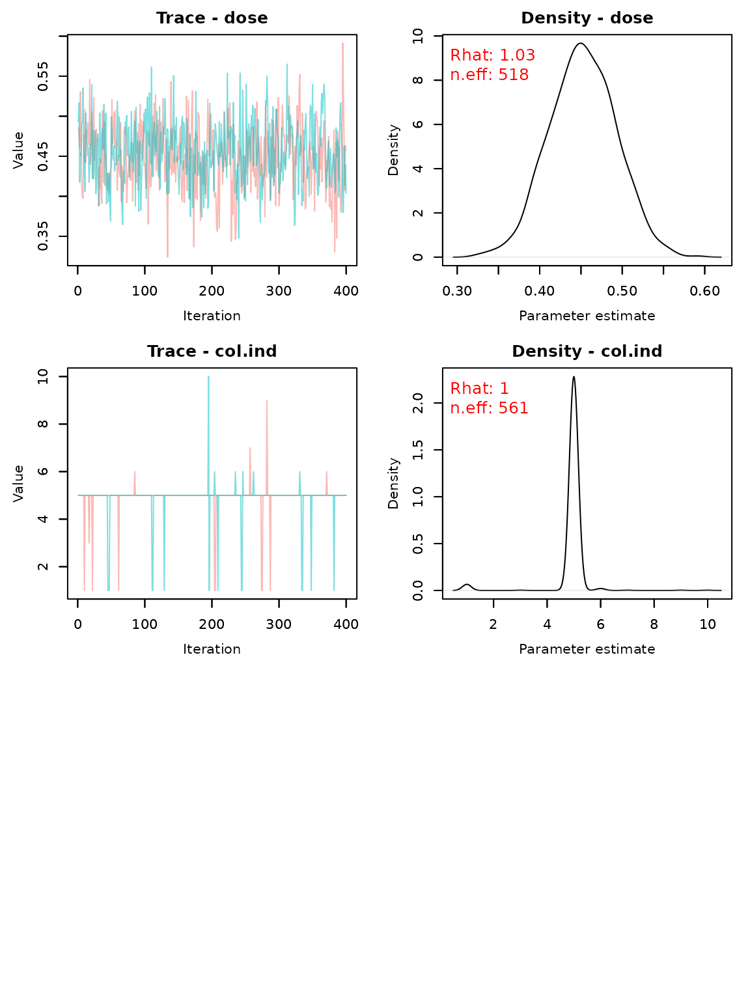
Poisson regression
Again, we first fit models including a quadratic exposure term by
setting deg=2.
set.seed(332101)
fit.ameras.poisson <- ameras(Y="Y.poisson", dosevars=dosevars, X=c("X1","X2"), data=data,
family="poisson", deg=2, doseRRmod = "EXP",
methods=c("RC", "ERC", "MCML", "FMA", "BMA"), niter.BMA = 5000,
nburnin.BMA = 1000, CI=c("wald.orig","percentile"))
#> Note: BMA may require extensive computation time in the order of multiple hours
#> Fitting RC
#> Fitting ERC
#> Fitting MCML
#> Fitting FMA
#> Fitting BMA
#> Defining model
#> Building model
#> Setting data and initial values
#> Running calculate on model
#> [Note] Any error reports that follow may simply reflect missing values in model variables.
#> Checking model sizes and dimensions
#> [Note] This model is not fully initialized. This is not an error.
#> To see which variables are not initialized, use model$initializeInfo().
#> For more information on model initialization, see help(modelInitialization).
#> Compiling
#> [Note] This may take a minute.
#> [Note] Use 'showCompilerOutput = TRUE' to see C++ compilation details.
#> Compiling
#> [Note] This may take a minute.
#> [Note] Use 'showCompilerOutput = TRUE' to see C++ compilation details.
#> running chain 1...
#> |-------------|-------------|-------------|-------------|
#> |-------------------------------------------------------|
#> running chain 2...
#> warning: logProb of data node Y[247]: logProb less than -1e12.
#> warning: logProb of data node Y[676]: logProb less than -1e12.
#> warning: logProb of data node Y[833]: logProb less than -1e12.
#> warning: logProb of data node Y[1635]: logProb less than -1e12.
#> |-------------|-------------|-------------|-------------|
#> |-------------------------------------------------------|
summary(fit.ameras.poisson)
#> Call:
#> ameras(data = data, family = "poisson", Y = "Y.poisson", dosevars = dosevars,
#> X = c("X1", "X2"), methods = c("RC", "ERC", "MCML", "FMA",
#> "BMA"), deg = 2, doseRRmod = "EXP", CI = c("wald.orig",
#> "percentile"), nburnin.BMA = 1000, niter.BMA = 5000)
#>
#> Total run time: 69.7 seconds
#>
#> Runtime in seconds by method:
#>
#> Method Runtime
#> RC 0.3
#> ERC 1.8
#> MCML 1.5
#> FMA 3.6
#> BMA 62.5
#>
#> Summary of coefficients by method:
#>
#> Method Term Estimate SE CI.lowerbound CI.upperbound Rhat n.eff
#> RC (Intercept) -1.09456 0.048655 -1.18992 -0.99920 NA NA
#> RC X1 0.49070 0.041922 0.40853 0.57287 NA NA
#> RC X2 -0.37625 0.055638 -0.48530 -0.26719 NA NA
#> RC dose 0.61976 0.040375 0.54062 0.69889 NA NA
#> RC dose_squared -0.03849 0.007566 -0.05332 -0.02366 NA NA
#> ERC (Intercept) -1.09068 0.048474 -1.18569 -0.99567 NA NA
#> ERC X1 0.49180 0.042008 0.40946 0.57414 NA NA
#> ERC X2 -0.37855 0.055639 -0.48760 -0.26950 NA NA
#> ERC dose 0.61138 0.039328 0.53430 0.68847 NA NA
#> ERC dose_squared -0.03626 0.007177 -0.05033 -0.02220 NA NA
#> MCML (Intercept) -1.07519 0.046954 -1.16722 -0.98316 NA NA
#> MCML X1 0.49897 0.041918 0.41681 0.58113 NA NA
#> MCML X2 -0.37711 0.055643 -0.48617 -0.26805 NA NA
#> MCML dose 0.60089 0.034218 0.53383 0.66796 NA NA
#> MCML dose_squared -0.03644 0.005719 -0.04764 -0.02523 NA NA
#> FMA (Intercept) -1.07542 0.047056 -1.16736 -0.98339 NA NA
#> FMA X1 0.49896 0.041800 0.41696 0.58065 NA NA
#> FMA X2 -0.37716 0.055479 -0.48601 -0.26864 NA NA
#> FMA dose 0.60138 0.035163 0.53336 0.67123 NA NA
#> FMA dose_squared -0.03656 0.005998 -0.04836 -0.02519 NA NA
#> BMA (Intercept) -1.07944 0.044741 -1.16649 -0.99362 1.02 215.00
#> BMA X1 0.49801 0.039956 0.42219 0.57163 1.03 435.00
#> BMA X2 -0.38167 0.055527 -0.49101 -0.27220 1.00 800.00
#> BMA dose 0.60805 0.035663 0.54553 0.68040 1.03 87.00
#> BMA dose_squared -0.03798 0.006215 -0.05048 -0.02715 1.03 79.00
coef(fit.ameras.poisson)
#> RC ERC MCML FMA BMA
#> (Intercept) -1.09455980 -1.09068092 -1.07519346 -1.07541780 -1.0794372
#> X1 0.49070108 0.49179875 0.49897425 0.49895993 0.4980120
#> X2 -0.37624508 -0.37854805 -0.37711401 -0.37715581 -0.3816682
#> dose 0.61975742 0.61138406 0.60089474 0.60137955 0.6080481
#> dose_squared -0.03849039 -0.03626348 -0.03643505 -0.03656317 -0.0379750
traceplot(fit.ameras.poisson)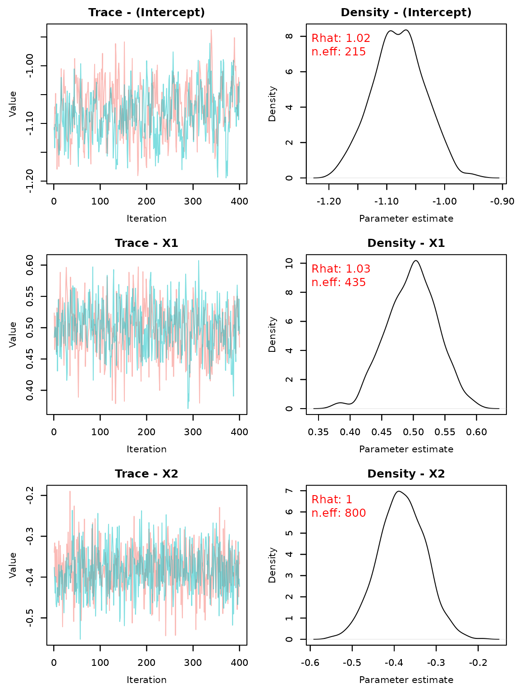

Without the quadratic term (deg=1):
set.seed(24252)
fit.ameras.poisson.lin <- ameras(Y="Y.poisson", dosevars=dosevars, X=c("X1","X2"), data=data,
family="poisson", deg=1, doseRRmod = "EXP",
methods=c("RC", "ERC", "MCML", "FMA", "BMA"), niter.BMA = 5000,
nburnin.BMA = 1000, CI=c("wald.orig","percentile"))
#> Note: BMA may require extensive computation time in the order of multiple hours
#> Fitting RC
#> Fitting ERC
#> Fitting MCML
#> Fitting FMA
#> Fitting BMA
#> Defining model
#> Building model
#> Setting data and initial values
#> Running calculate on model
#> [Note] Any error reports that follow may simply reflect missing values in model variables.
#> Checking model sizes and dimensions
#> [Note] This model is not fully initialized. This is not an error.
#> To see which variables are not initialized, use model$initializeInfo().
#> For more information on model initialization, see help(modelInitialization).
#> Compiling
#> [Note] This may take a minute.
#> [Note] Use 'showCompilerOutput = TRUE' to see C++ compilation details.
#> Compiling
#> [Note] This may take a minute.
#> [Note] Use 'showCompilerOutput = TRUE' to see C++ compilation details.
#> running chain 1...
#> |-------------|-------------|-------------|-------------|
#> |-------------------------------------------------------|
#> running chain 2...
#> |-------------|-------------|-------------|-------------|
#> |-------------------------------------------------------|
summary(fit.ameras.poisson.lin)
#> Call:
#> ameras(data = data, family = "poisson", Y = "Y.poisson", dosevars = dosevars,
#> X = c("X1", "X2"), methods = c("RC", "ERC", "MCML", "FMA",
#> "BMA"), deg = 1, doseRRmod = "EXP", CI = c("wald.orig",
#> "percentile"), nburnin.BMA = 1000, niter.BMA = 5000)
#>
#> Total run time: 63.3 seconds
#>
#> Runtime in seconds by method:
#>
#> Method Runtime
#> RC 0.2
#> ERC 1.0
#> MCML 0.7
#> FMA 2.0
#> BMA 59.4
#>
#> Summary of coefficients by method:
#>
#> Method Term Estimate SE CI.lowerbound CI.upperbound Rhat n.eff
#> RC (Intercept) -0.9650 0.04127 -1.0458 -0.8841 NA NA
#> RC X1 0.5054 0.04195 0.4232 0.5876 NA NA
#> RC X2 -0.3640 0.05560 -0.4730 -0.2550 NA NA
#> RC dose 0.4204 0.01346 0.3940 0.4468 NA NA
#> ERC (Intercept) -0.9667 0.04134 -1.0477 -0.8856 NA NA
#> ERC X1 0.5049 0.04202 0.4226 0.5873 NA NA
#> ERC X2 -0.3667 0.05559 -0.4756 -0.2577 NA NA
#> ERC dose 0.4222 0.01361 0.3955 0.4489 NA NA
#> MCML (Intercept) -0.9173 0.04048 -0.9967 -0.8380 NA NA
#> MCML X1 0.5129 0.04231 0.4300 0.5958 NA NA
#> MCML X2 -0.3579 0.05582 -0.4674 -0.2485 NA NA
#> MCML dose 0.3823 0.01231 0.3581 0.4064 NA NA
#> FMA (Intercept) -0.9174 0.04044 -0.9969 -0.8384 NA NA
#> FMA X1 0.5121 0.04257 0.4284 0.5950 NA NA
#> FMA X2 -0.3584 0.05587 -0.4680 -0.2496 NA NA
#> FMA dose 0.3826 0.01255 0.3585 0.4077 NA NA
#> BMA (Intercept) -0.9180 0.04041 -0.9935 -0.8378 1.00 301.00
#> BMA X1 0.5100 0.04121 0.4248 0.5896 1.01 364.00
#> BMA X2 -0.3581 0.05584 -0.4661 -0.2460 1.00 800.00
#> BMA dose 0.3833 0.01343 0.3561 0.4087 1.01 371.00
coef(fit.ameras.poisson.lin)
#> RC ERC MCML FMA BMA
#> (Intercept) -0.9649529 -0.9666735 -0.9173445 -0.9173785 -0.9179930
#> X1 0.5054270 0.5049256 0.5129102 0.5120519 0.5099994
#> X2 -0.3639707 -0.3666592 -0.3579466 -0.3583942 -0.3581445
#> dose 0.4204226 0.4222084 0.3822723 0.3826304 0.3833150
traceplot(fit.ameras.poisson.lin)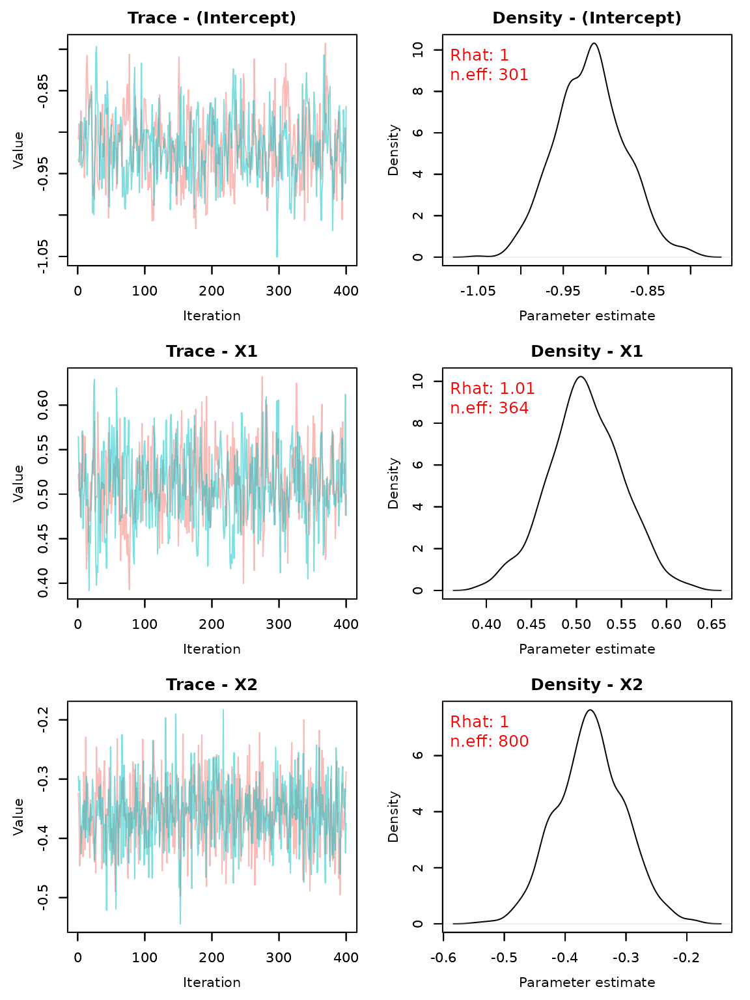
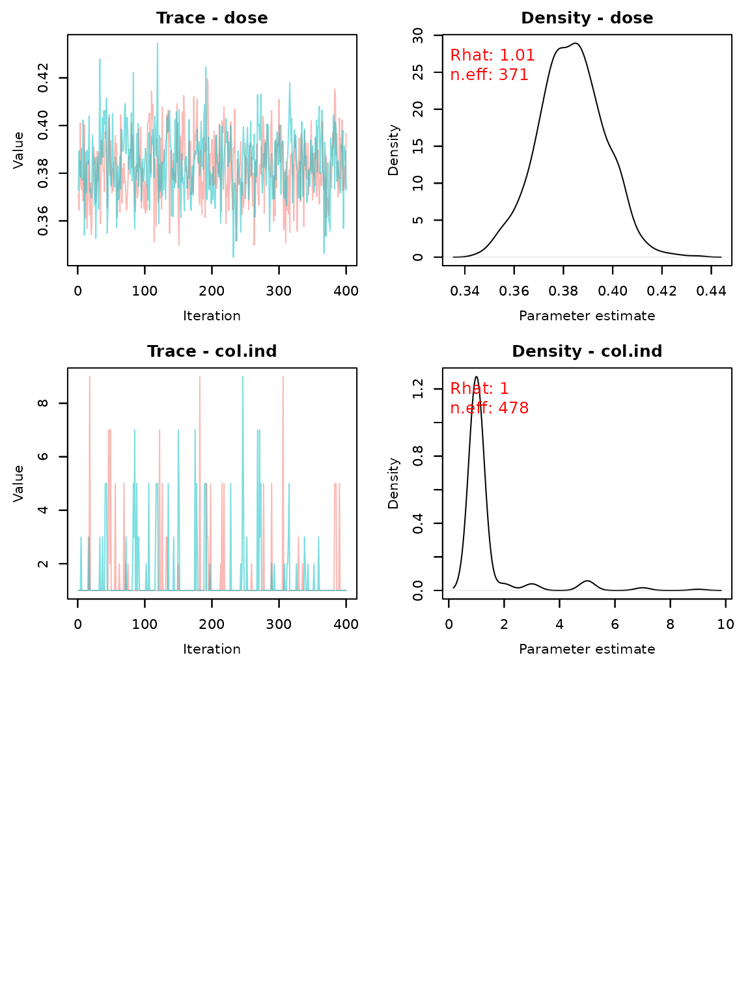
Proportional hazards regression
Proportional hazards regression uses the same syntax, with
Y the 0-1 status variable and exit for the
exit time variable. In case of left truncation, entry times can be
specified through the entry argument. Note that BMA fits a
piecewise constant baseline hazard h0 as the proportional
hazards model is not directly supported. By default, the observed time
interval is divided into 10 intervals using quantiles of the observed
event times among cases. This number of such intervals can be specified
through the prophaz.numints.BMA argument. The BMA output
contains the prophaz.numints.BMA+1 cutpoints defining the
intervals in addition to h0.
Again, we first fit models including a quadratic exposure term by
setting deg=2.
set.seed(332120000)
fit.ameras.prophaz <- ameras(Y="status", exit="time", dosevars=dosevars, X=c("X1","X2"),
data=data, family="prophaz", deg=2, doseRRmod = "EXP",
methods=c("RC", "ERC", "MCML", "FMA", "BMA"), niter.BMA = 5000,
nburnin.BMA = 1000, CI=c("wald.orig","percentile"))
#> Note: BMA may require extensive computation time in the order of multiple hours
#> Fitting RC
#> Fitting ERC
#> Warning in ameras.rc(family = family, dosevars = dosevars, data = data, :
#> WARNING: Hessian was not invertible or inverse was not positive definite,
#> variance matrix could not be obtained
#> Fitting MCML
#> Fitting FMA
#> Fitting BMA
#> Defining model
#> Building model
#> Setting data and initial values
#> Running calculate on model
#> [Note] Any error reports that follow may simply reflect missing values in model variables.
#> Checking model sizes and dimensions
#> [Note] This model is not fully initialized. This is not an error.
#> To see which variables are not initialized, use model$initializeInfo().
#> For more information on model initialization, see help(modelInitialization).
#> Compiling
#> [Note] This may take a minute.
#> [Note] Use 'showCompilerOutput = TRUE' to see C++ compilation details.
#> Compiling
#> [Note] This may take a minute.
#> [Note] Use 'showCompilerOutput = TRUE' to see C++ compilation details.
#> running chain 1...
#> warning: logProb of data node zeros[7]: logProb less than -1e12.
#> warning: logProb of data node zeros[17]: logProb less than -1e12.
#> warning: logProb of data node zeros[71]: logProb less than -1e12.
#> warning: logProb of data node zeros[247]: logProb less than -1e12.
#> warning: logProb of data node zeros[267]: logProb less than -1e12.
#> warning: logProb of data node zeros[270]: logProb less than -1e12.
#> warning: logProb of data node zeros[433]: logProb less than -1e12.
#> warning: logProb of data node zeros[509]: logProb less than -1e12.
#> warning: logProb of data node zeros[620]: logProb less than -1e12.
#> warning: logProb of data node zeros[676]: logProb less than -1e12.
#> warning: logProb of data node zeros[716]: logProb less than -1e12.
#> warning: logProb of data node zeros[833]: logProb less than -1e12.
#> warning: logProb of data node zeros[1074]: logProb less than -1e12.
#> warning: logProb of data node zeros[1517]: logProb less than -1e12.
#> warning: logProb of data node zeros[1566]: logProb less than -1e12.
#> warning: logProb of data node zeros[1635]: logProb less than -1e12.
#> warning: logProb of data node zeros[1755]: logProb less than -1e12.
#> warning: logProb of data node zeros[1827]: logProb less than -1e12.
#> warning: logProb of data node zeros[1991]: logProb less than -1e12.
#> warning: logProb of data node zeros[1997]: logProb less than -1e12.
#> warning: logProb of data node zeros[2021]: logProb less than -1e12.
#> warning: logProb of data node zeros[2237]: logProb less than -1e12.
#> warning: logProb of data node zeros[2339]: logProb less than -1e12.
#> warning: logProb of data node zeros[2395]: logProb less than -1e12.
#> warning: logProb of data node zeros[2530]: logProb less than -1e12.
#> warning: logProb of data node zeros[2559]: logProb less than -1e12.
#> warning: logProb of data node zeros[2562]: logProb less than -1e12.
#> warning: logProb of data node zeros[2655]: logProb less than -1e12.
#> warning: logProb of data node zeros[2671]: logProb less than -1e12.
#> warning: logProb of data node zeros[2715]: logProb less than -1e12.
#> warning: logProb of data node zeros[2733]: logProb less than -1e12.
#> warning: logProb of data node zeros[2743]: logProb less than -1e12.
#> warning: logProb of data node zeros[2771]: logProb less than -1e12.
#> warning: logProb of data node zeros[2824]: logProb less than -1e12.
#> warning: logProb of data node zeros[2971]: logProb less than -1e12.
#> |-------------|-------------|-------------|-------------|
#> |-------------------------------------------------------|
#> running chain 2...
#> warning: logProb of data node zeros[1635]: logProb less than -1e12.
#> warning: logProb of data node zeros[2907]: logProb less than -1e12.
#> |-------------|-------------|-------------|-------------|
#> |-------------------------------------------------------|
summary(fit.ameras.prophaz)
#> Call:
#> ameras(data = data, family = "prophaz", Y = "status", dosevars = dosevars,
#> X = c("X1", "X2"), exit = "time", methods = c("RC", "ERC",
#> "MCML", "FMA", "BMA"), deg = 2, doseRRmod = "EXP", CI = c("wald.orig",
#> "percentile"), nburnin.BMA = 1000, niter.BMA = 5000)
#>
#> Total run time: 637.5 seconds
#>
#> Runtime in seconds by method:
#>
#> Method Runtime
#> RC 0.3
#> ERC 529.3
#> MCML 0.7
#> FMA 2.1
#> BMA 105.1
#>
#> Summary of coefficients by method:
#>
#> Method Term Estimate SE CI.lowerbound CI.upperbound Rhat n.eff
#> RC X1 0.629674 0.08485 0.46338 0.795971 NA NA
#> RC X2 -0.423116 0.11150 -0.64165 -0.204584 NA NA
#> RC dose 0.587614 0.08915 0.41289 0.762339 NA NA
#> RC dose_squared -0.033682 0.01807 -0.06910 0.001741 NA NA
#> ERC X1 0.636755 NA NA NA NA NA
#> ERC X2 -0.422042 NA NA NA NA NA
#> ERC dose 0.295488 NA NA NA NA NA
#> ERC dose_squared -0.003357 NA NA NA NA NA
#> MCML X1 0.629162 0.08518 0.46221 0.796110 NA NA
#> MCML X2 -0.425156 0.11196 -0.64460 -0.205715 NA NA
#> MCML dose 0.590217 0.08046 0.43252 0.747910 NA NA
#> MCML dose_squared -0.038038 0.01523 -0.06789 -0.008184 NA NA
#> FMA X1 0.624536 0.08542 0.45624 0.791452 NA NA
#> FMA X2 -0.433644 0.11160 -0.65267 -0.215490 NA NA
#> FMA dose 0.594196 0.07841 0.44136 0.749143 NA NA
#> FMA dose_squared -0.038945 0.01454 -0.06778 -0.010701 NA NA
#> BMA X1 0.631447 0.08479 0.47316 0.794891 1.02 311.00
#> BMA X2 -0.432579 0.11574 -0.66168 -0.220190 1.02 740.00
#> BMA dose 0.579261 0.07815 0.42939 0.725369 1.00 89.00
#> BMA dose_squared -0.036336 0.01514 -0.06570 -0.006216 1.00 82.00
#> BMA h0[1] 0.331844 0.05060 0.24512 0.437053 1.01 350.00
#> BMA h0[2] 0.354968 0.05515 0.25388 0.474837 1.00 457.00
#> BMA h0[3] 0.274038 0.04421 0.19646 0.367043 1.00 341.00
#> BMA h0[4] 0.304833 0.04870 0.22042 0.413868 1.00 426.00
#> BMA h0[5] 0.324187 0.05181 0.22952 0.430266 1.01 452.00
#> BMA h0[6] 0.410268 0.06456 0.29767 0.541362 1.01 300.00
#> BMA h0[7] 0.275961 0.04233 0.20322 0.366353 1.00 467.00
#> BMA h0[8] 0.319488 0.04863 0.22558 0.427560 1.00 417.00
#> BMA h0[9] 0.279575 0.04103 0.20429 0.360305 1.00 358.00
#> BMA h0[10] 0.317120 0.04949 0.23321 0.431447 1.01 288.00
coef(fit.ameras.prophaz)
#> RC ERC MCML FMA BMA
#> X1 0.62967434 0.636754979 0.62916199 0.62453646 0.63144657
#> X2 -0.42311583 -0.422041734 -0.42515576 -0.43364414 -0.43257946
#> dose 0.58761408 0.295487972 0.59021691 0.59419590 0.57926053
#> dose_squared -0.03368205 -0.003356734 -0.03803829 -0.03894528 -0.03633593
#> h0[1] NA NA NA NA 0.33184446
#> h0[2] NA NA NA NA 0.35496760
#> h0[3] NA NA NA NA 0.27403811
#> h0[4] NA NA NA NA 0.30483271
#> h0[5] NA NA NA NA 0.32418664
#> h0[6] NA NA NA NA 0.41026813
#> h0[7] NA NA NA NA 0.27596111
#> h0[8] NA NA NA NA 0.31948789
#> h0[9] NA NA NA NA 0.27957458
#> h0[10] NA NA NA NA 0.31712022The BMA output now contains the intervals with piecewise constant
baseline hazards, corresponding to the estimates h0:
fit.ameras.prophaz$BMA$prophaz.timepoints
#> NULL
traceplot(fit.ameras.prophaz)


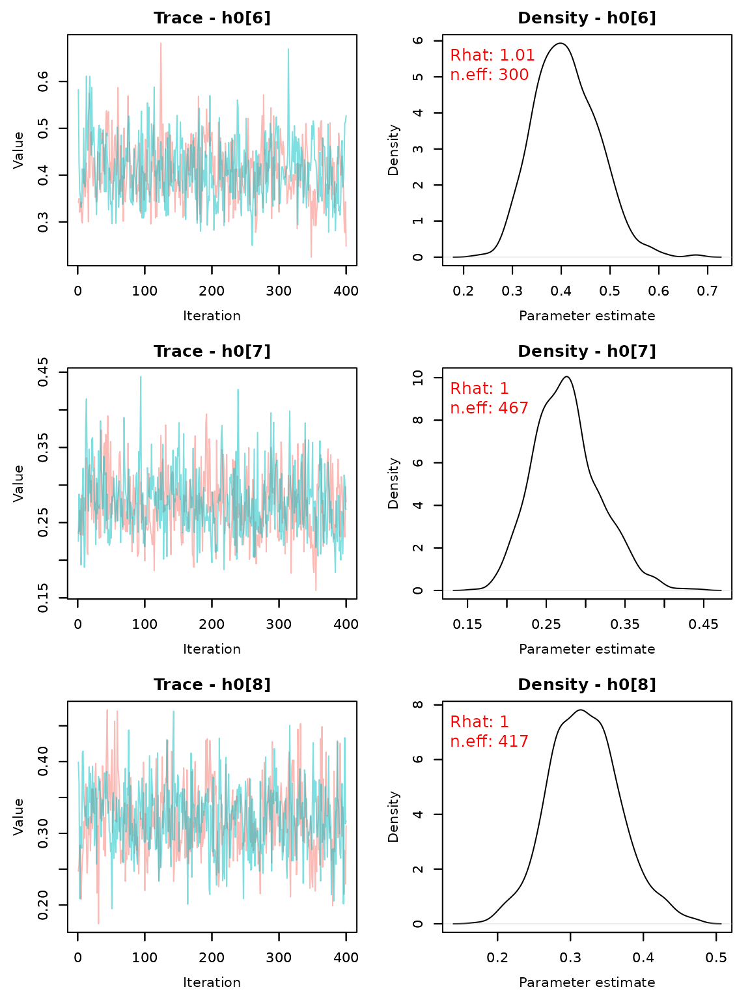

Without the quadratic term (deg=1):
set.seed(24978252)
fit.ameras.prophaz.lin <- ameras(Y="status", exit="time", dosevars=dosevars, X=c("X1","X2"),
data=data, family="prophaz", deg=1, doseRRmod = "EXP",
methods=c("RC", "ERC", "MCML", "FMA", "BMA"), niter.BMA = 5000,
nburnin.BMA = 1000, CI=c("wald.orig","percentile"))
#> Note: BMA may require extensive computation time in the order of multiple hours
#> Fitting RC
#> Fitting ERC
#> Warning in ameras.rc(family = family, dosevars = dosevars, data = data, :
#> WARNING: Hessian was not invertible or inverse was not positive definite,
#> variance matrix could not be obtained
#> Fitting MCML
#> Fitting FMA
#> Fitting BMA
#> Defining model
#> Building model
#> Setting data and initial values
#> Running calculate on model
#> [Note] Any error reports that follow may simply reflect missing values in model variables.
#> Checking model sizes and dimensions
#> [Note] This model is not fully initialized. This is not an error.
#> To see which variables are not initialized, use model$initializeInfo().
#> For more information on model initialization, see help(modelInitialization).
#> Compiling
#> [Note] This may take a minute.
#> [Note] Use 'showCompilerOutput = TRUE' to see C++ compilation details.
#> Compiling
#> [Note] This may take a minute.
#> [Note] Use 'showCompilerOutput = TRUE' to see C++ compilation details.
#> running chain 1...
#> |-------------|-------------|-------------|-------------|
#> |-------------------------------------------------------|
#> running chain 2...
#> |-------------|-------------|-------------|-------------|
#> |-------------------------------------------------------|
summary(fit.ameras.prophaz.lin)
#> Call:
#> ameras(data = data, family = "prophaz", Y = "status", dosevars = dosevars,
#> X = c("X1", "X2"), exit = "time", methods = c("RC", "ERC",
#> "MCML", "FMA", "BMA"), deg = 1, doseRRmod = "EXP", CI = c("wald.orig",
#> "percentile"), nburnin.BMA = 1000, niter.BMA = 5000)
#>
#> Total run time: 374.7 seconds
#>
#> Runtime in seconds by method:
#>
#> Method Runtime
#> RC 0.1
#> ERC 269.7
#> MCML 1.1
#> FMA 1.1
#> BMA 102.7
#>
#> Summary of coefficients by method:
#>
#> Method Term Estimate SE CI.lowerbound CI.upperbound Rhat n.eff
#> RC X1 0.6358 0.08488 0.4695 0.8022 NA NA
#> RC X2 -0.4161 0.11144 -0.6345 -0.1977 NA NA
#> RC dose 0.4284 0.03004 0.3695 0.4873 NA NA
#> ERC X1 0.6416 NA NA NA NA NA
#> ERC X2 -0.4220 NA NA NA NA NA
#> ERC dose 0.2812 NA NA NA NA NA
#> MCML X1 0.6462 0.08565 0.4783 0.8141 NA NA
#> MCML X2 -0.4125 0.11253 -0.6330 -0.1919 NA NA
#> MCML dose 0.4002 0.02908 0.3432 0.4572 NA NA
#> FMA X1 0.6457 0.08567 0.4774 0.8142 NA NA
#> FMA X2 -0.4125 0.11263 -0.6344 -0.1925 NA NA
#> FMA dose 0.4001 0.02901 0.3431 0.4567 NA NA
#> BMA X1 0.6474 0.08153 0.4888 0.8140 1.00 388.00
#> BMA X2 -0.4248 0.11473 -0.6443 -0.2092 1.00 800.00
#> BMA dose 0.3987 0.02884 0.3427 0.4572 1.01 478.00
#> BMA h0[1] 0.3646 0.05506 0.2675 0.4718 1.00 644.00
#> BMA h0[2] 0.3926 0.05694 0.2857 0.5086 1.01 540.00
#> BMA h0[3] 0.3036 0.04541 0.2239 0.3993 1.00 549.00
#> BMA h0[4] 0.3378 0.04899 0.2479 0.4480 1.00 692.00
#> BMA h0[5] 0.3615 0.05340 0.2688 0.4773 1.00 720.00
#> BMA h0[6] 0.4547 0.06635 0.3319 0.5874 1.00 546.00
#> BMA h0[7] 0.3080 0.04573 0.2288 0.4042 1.01 690.00
#> BMA h0[8] 0.3551 0.05105 0.2575 0.4580 1.00 589.00
#> BMA h0[9] 0.3091 0.04455 0.2277 0.4003 1.00 907.00
#> BMA h0[10] 0.3496 0.05211 0.2535 0.4542 1.01 542.00
coef(fit.ameras.prophaz.lin)
#> RC ERC MCML FMA BMA
#> X1 0.6358422 0.6415799 0.6462073 0.6457466 0.6474031
#> X2 -0.4160762 -0.4219654 -0.4124721 -0.4125357 -0.4247814
#> dose 0.4283893 0.2811645 0.4001775 0.4000975 0.3987353
#> h0[1] NA NA NA NA 0.3645755
#> h0[2] NA NA NA NA 0.3925686
#> h0[3] NA NA NA NA 0.3035865
#> h0[4] NA NA NA NA 0.3378431
#> h0[5] NA NA NA NA 0.3615119
#> h0[6] NA NA NA NA 0.4547288
#> h0[7] NA NA NA NA 0.3079510
#> h0[8] NA NA NA NA 0.3550875
#> h0[9] NA NA NA NA 0.3091293
#> h0[10] NA NA NA NA 0.3495984
traceplot(fit.ameras.prophaz.lin)


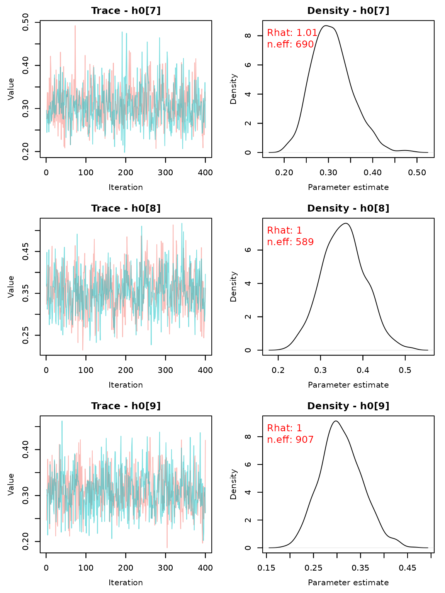

Multinomial logistic regression
For multinomial logistic regression, the last category (in the case
of the example data, Y.multinomial='3') is used as the
referent category.
Again, we first fit models including a quadratic exposure term by
setting deg=2.
set.seed(33)
fit.ameras.multinomial <- ameras(Y="Y.multinomial", dosevars=dosevars, X=c("X1","X2"), data=data,
family="multinomial", deg=2, doseRRmod = "EXP",
methods=c("RC", "ERC", "MCML", "FMA", "BMA"), niter.BMA = 5000,
nburnin.BMA = 1000, CI=c("wald.orig","percentile"))
#> Note: BMA may require extensive computation time in the order of multiple hours
#> Fitting RC
#> Fitting ERC
#> Fitting MCML
#> Fitting FMA
#> Fitting BMA
#> Defining model
#> Building model
#> Setting data and initial values
#> Running calculate on model
#> [Note] Any error reports that follow may simply reflect missing values in model variables.
#> Checking model sizes and dimensions
#> [Note] This model is not fully initialized. This is not an error.
#> To see which variables are not initialized, use model$initializeInfo().
#> For more information on model initialization, see help(modelInitialization).
#> Compiling
#> [Note] This may take a minute.
#> [Note] Use 'showCompilerOutput = TRUE' to see C++ compilation details.
#> Compiling
#> [Note] This may take a minute.
#> [Note] Use 'showCompilerOutput = TRUE' to see C++ compilation details.
#> running chain 1...
#> |-------------|-------------|-------------|-------------|
#> |-------------------------------------------------------|
#> running chain 2...
#> |-------------|-------------|-------------|-------------|
#> |-------------------------------------------------------|
summary(fit.ameras.multinomial)
#> Call:
#> ameras(data = data, family = "multinomial", Y = "Y.multinomial",
#> dosevars = dosevars, X = c("X1", "X2"), methods = c("RC",
#> "ERC", "MCML", "FMA", "BMA"), deg = 2, doseRRmod = "EXP",
#> CI = c("wald.orig", "percentile"), nburnin.BMA = 1000, niter.BMA = 5000)
#>
#> Total run time: 435.6 seconds
#>
#> Runtime in seconds by method:
#>
#> Method Runtime
#> RC 1.2
#> ERC 154.3
#> MCML 7.9
#> FMA 10.6
#> BMA 261.6
#>
#> Summary of coefficients by method:
#>
#> Method Term Estimate SE CI.lowerbound CI.upperbound Rhat
#> RC (1)_(Intercept) -1.134879 0.11395 -1.35823 -0.91153 NA
#> RC (1)_X1 0.521885 0.10631 0.31352 0.73025 NA
#> RC (1)_X2 -0.347821 0.14935 -0.64054 -0.05510 NA
#> RC (1)_dose 0.541114 0.13250 0.28142 0.80081 NA
#> RC (1)_dose_squared -0.028978 0.03377 -0.09517 0.03721 NA
#> RC (2)_(Intercept) -0.007547 0.08795 -0.17992 0.16483 NA
#> RC (2)_X1 -0.513675 0.08620 -0.68264 -0.34471 NA
#> RC (2)_X2 0.705782 0.10738 0.49532 0.91625 NA
#> RC (2)_dose 0.555006 0.11504 0.32952 0.78049 NA
#> RC (2)_dose_squared -0.037842 0.03053 -0.09769 0.02201 NA
#> ERC (1)_(Intercept) -1.139984 0.11278 -1.36104 -0.91893 NA
#> ERC (1)_X1 0.524098 0.10651 0.31534 0.73286 NA
#> ERC (1)_X2 -0.351142 0.14952 -0.64420 -0.05808 NA
#> ERC (1)_dose 0.561788 0.12424 0.31827 0.80531 NA
#> ERC (1)_dose_squared -0.031891 0.02990 -0.09050 0.02672 NA
#> ERC (2)_(Intercept) -0.008660 0.08626 -0.17772 0.16040 NA
#> ERC (2)_X1 -0.511536 0.08638 -0.68084 -0.34223 NA
#> ERC (2)_X2 0.703688 0.10757 0.49285 0.91452 NA
#> ERC (2)_dose 0.563142 0.10587 0.35564 0.77065 NA
#> ERC (2)_dose_squared -0.036409 0.02606 -0.08748 0.01466 NA
#> MCML (1)_(Intercept) -1.121541 0.11214 -1.34134 -0.90174 NA
#> MCML (1)_X1 0.522503 0.10638 0.31400 0.73101 NA
#> MCML (1)_X2 -0.349944 0.14943 -0.64282 -0.05707 NA
#> MCML (1)_dose 0.526846 0.12549 0.28090 0.77280 NA
#> MCML (1)_dose_squared -0.027194 0.03020 -0.08639 0.03200 NA
#> MCML (2)_(Intercept) -0.001584 0.08614 -0.17042 0.16725 NA
#> MCML (2)_X1 -0.513787 0.08621 -0.68275 -0.34482 NA
#> MCML (2)_X2 0.703779 0.10746 0.49316 0.91440 NA
#> MCML (2)_dose 0.559807 0.10680 0.35048 0.76913 NA
#> MCML (2)_dose_squared -0.041118 0.02628 -0.09264 0.01040 NA
#> FMA (1)_(Intercept) -1.125692 0.11269 -1.34744 -0.90538 NA
#> FMA (1)_X1 0.522203 0.10653 0.31231 0.72993 NA
#> FMA (1)_X2 -0.349524 0.14951 -0.64083 -0.05569 NA
#> FMA (1)_dose 0.536663 0.12823 0.28843 0.79027 NA
#> FMA (1)_dose_squared -0.030264 0.03136 -0.09280 0.03040 NA
#> FMA (2)_(Intercept) -0.001039 0.08607 -0.16976 0.16766 NA
#> FMA (2)_X1 -0.513380 0.08602 -0.68183 -0.34437 NA
#> FMA (2)_X2 0.704601 0.10763 0.49377 0.91608 NA
#> FMA (2)_dose 0.557269 0.10747 0.34688 0.76959 NA
#> FMA (2)_dose_squared -0.040745 0.02652 -0.09316 0.01108 NA
#> BMA (1)_(Intercept) -1.120533 0.11510 -1.35169 -0.90697 1.02
#> BMA (1)_X1 0.518102 0.11473 0.30333 0.74778 1.00
#> BMA (1)_X2 -0.342415 0.14116 -0.61963 -0.07669 1.01
#> BMA (1)_dose 0.522811 0.12793 0.27114 0.79384 1.04
#> BMA (1)_dose_squared -0.024286 0.03270 -0.08275 0.04419 1.01
#> BMA (2)_(Intercept) 0.003372 0.09478 -0.17065 0.19664 1.00
#> BMA (2)_X1 -0.522597 0.08709 -0.68900 -0.35222 1.00
#> BMA (2)_X2 0.708877 0.10811 0.49078 0.91896 1.00
#> BMA (2)_dose 0.554817 0.12798 0.23771 0.76811 1.01
#> BMA (2)_dose_squared -0.037946 0.03326 -0.09258 0.04645 1.01
#> n.eff
#> NA
#> NA
#> NA
#> NA
#> NA
#> NA
#> NA
#> NA
#> NA
#> NA
#> NA
#> NA
#> NA
#> NA
#> NA
#> NA
#> NA
#> NA
#> NA
#> NA
#> NA
#> NA
#> NA
#> NA
#> NA
#> NA
#> NA
#> NA
#> NA
#> NA
#> NA
#> NA
#> NA
#> NA
#> NA
#> NA
#> NA
#> NA
#> NA
#> NA
#> 173.00
#> 330.00
#> 663.00
#> 73.00
#> 73.00
#> 101.00
#> 364.00
#> 462.00
#> 47.00
#> 45.00
coef(fit.ameras.multinomial)
#> RC ERC MCML FMA
#> (1)_(Intercept) -1.134879146 -1.139983536 -1.12154130 -1.125692410
#> (1)_X1 0.521885281 0.524097727 0.52250322 0.522202730
#> (1)_X2 -0.347820786 -0.351142280 -0.34994376 -0.349524397
#> (1)_dose 0.541114276 0.561787528 0.52684585 0.536663279
#> (1)_dose_squared -0.028978278 -0.031891085 -0.02719420 -0.030263819
#> (2)_(Intercept) -0.007546883 -0.008659617 -0.00158420 -0.001039462
#> (2)_X1 -0.513675252 -0.511536376 -0.51378683 -0.513379776
#> (2)_X2 0.705781705 0.703687594 0.70377938 0.704600522
#> (2)_dose 0.555005580 0.563142229 0.55980729 0.557268591
#> (2)_dose_squared -0.037841810 -0.036408828 -0.04111845 -0.040744704
#> BMA
#> (1)_(Intercept) -1.120532838
#> (1)_X1 0.518102027
#> (1)_X2 -0.342415237
#> (1)_dose 0.522811057
#> (1)_dose_squared -0.024285677
#> (2)_(Intercept) 0.003371856
#> (2)_X1 -0.522596807
#> (2)_X2 0.708876654
#> (2)_dose 0.554817132
#> (2)_dose_squared -0.037945537
traceplot(fit.ameras.multinomial)

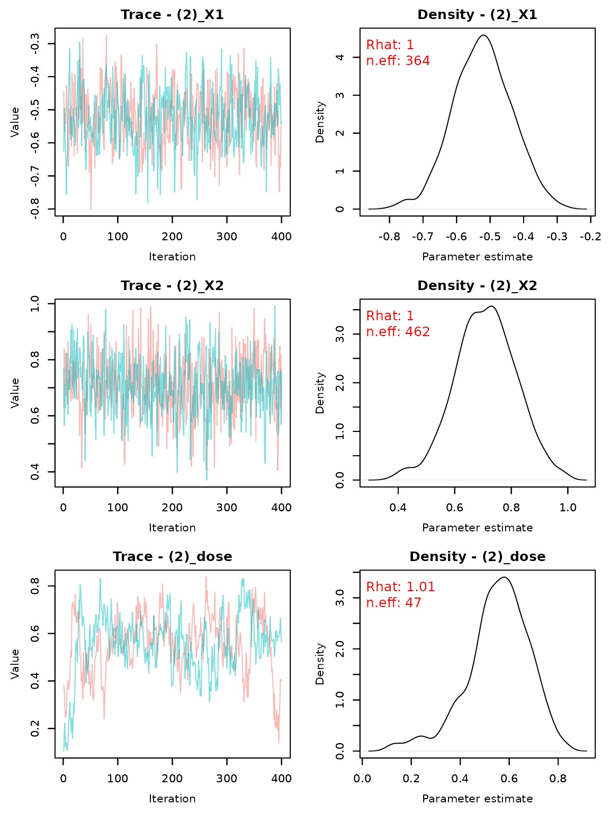
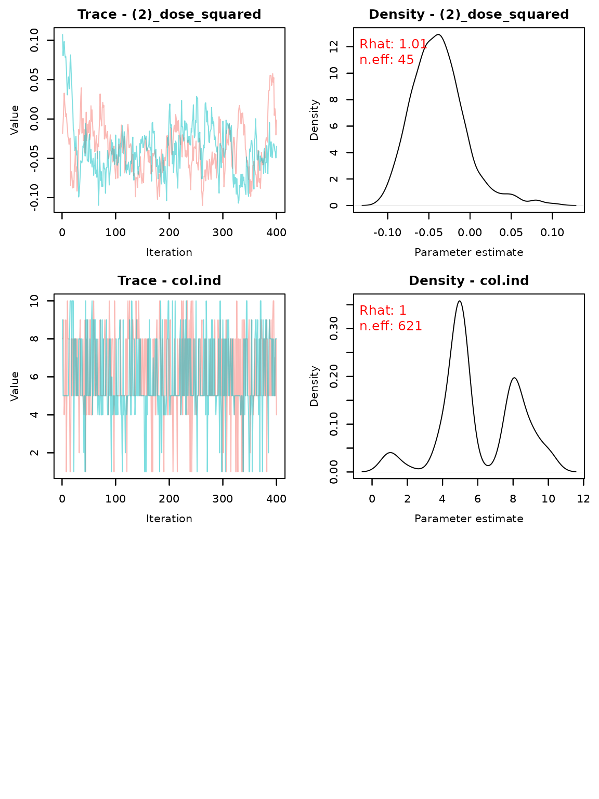
Without the quadratic term (deg=1):
set.seed(44)
fit.ameras.multinomial.lin <- ameras(Y="Y.multinomial", dosevars=dosevars, X=c("X1","X2"), data=data,
family="multinomial", deg=1, doseRRmod = "EXP",
methods=c("RC","ERC", "MCML", "FMA", "BMA"), niter.BMA = 5000,
nburnin.BMA = 1000, CI=c("wald.orig","percentile"))
#> Note: BMA may require extensive computation time in the order of multiple hours
#> Fitting RC
#> Fitting ERC
#> Fitting MCML
#> Fitting FMA
#> Fitting BMA
#> Defining model
#> Building model
#> Setting data and initial values
#> Running calculate on model
#> [Note] Any error reports that follow may simply reflect missing values in model variables.
#> Checking model sizes and dimensions
#> [Note] This model is not fully initialized. This is not an error.
#> To see which variables are not initialized, use model$initializeInfo().
#> For more information on model initialization, see help(modelInitialization).
#> Compiling
#> [Note] This may take a minute.
#> [Note] Use 'showCompilerOutput = TRUE' to see C++ compilation details.
#> Compiling
#> [Note] This may take a minute.
#> [Note] Use 'showCompilerOutput = TRUE' to see C++ compilation details.
#> running chain 1...
#> |-------------|-------------|-------------|-------------|
#> |-------------------------------------------------------|
#> running chain 2...
#> |-------------|-------------|-------------|-------------|
#> |-------------------------------------------------------|
summary(fit.ameras.multinomial.lin)
#> Call:
#> ameras(data = data, family = "multinomial", Y = "Y.multinomial",
#> dosevars = dosevars, X = c("X1", "X2"), methods = c("RC",
#> "ERC", "MCML", "FMA", "BMA"), deg = 1, doseRRmod = "EXP",
#> CI = c("wald.orig", "percentile"), nburnin.BMA = 1000, niter.BMA = 5000)
#>
#> Total run time: 348.8 seconds
#>
#> Runtime in seconds by method:
#>
#> Method Runtime
#> RC 0.9
#> ERC 107.9
#> MCML 6.0
#> FMA 8.3
#> BMA 225.7
#>
#> Summary of coefficients by method:
#>
#> Method Term Estimate SE CI.lowerbound CI.upperbound Rhat
#> RC (1)_(Intercept) -1.10156 0.10093 -1.29939 -0.90373 NA
#> RC (1)_X1 0.52203 0.10628 0.31372 0.73034 NA
#> RC (1)_X2 -0.34710 0.14929 -0.63971 -0.05448 NA
#> RC (1)_dose 0.45264 0.05805 0.33885 0.56643 NA
#> RC (2)_(Intercept) 0.04417 0.07667 -0.10611 0.19445 NA
#> RC (2)_X1 -0.51312 0.08614 -0.68196 -0.34428 NA
#> RC (2)_X2 0.70793 0.10728 0.49767 0.91819 NA
#> RC (2)_dose 0.43049 0.05170 0.32915 0.53183 NA
#> ERC (1)_(Intercept) -1.10285 0.10195 -1.30266 -0.90304 NA
#> ERC (1)_X1 0.52577 0.10650 0.31704 0.73451 NA
#> ERC (1)_X2 -0.35176 0.14953 -0.64483 -0.05868 NA
#> ERC (1)_dose 0.46441 0.06099 0.34486 0.58396 NA
#> ERC (2)_(Intercept) 0.03947 0.07756 -0.11255 0.19148 NA
#> ERC (2)_X1 -0.51003 0.08634 -0.67926 -0.34081 NA
#> ERC (2)_X2 0.70435 0.10749 0.49368 0.91502 NA
#> ERC (2)_dose 0.44543 0.05364 0.34031 0.55056 NA
#> MCML (1)_(Intercept) -1.09147 0.10115 -1.28972 -0.89322 NA
#> MCML (1)_X1 0.52239 0.10633 0.31398 0.73081 NA
#> MCML (1)_X2 -0.34934 0.14941 -0.64218 -0.05650 NA
#> MCML (1)_dose 0.44410 0.05912 0.32822 0.55998 NA
#> MCML (2)_(Intercept) 0.05917 0.07624 -0.09027 0.20860 NA
#> MCML (2)_X1 -0.51290 0.08614 -0.68175 -0.34406 NA
#> MCML (2)_X2 0.70604 0.10735 0.49564 0.91645 NA
#> MCML (2)_dose 0.41753 0.05156 0.31647 0.51860 NA
#> FMA (1)_(Intercept) -1.09114 0.10101 -1.28880 -0.89308 NA
#> FMA (1)_X1 0.52245 0.10612 0.31541 0.73147 NA
#> FMA (1)_X2 -0.34937 0.14960 -0.64255 -0.05564 NA
#> FMA (1)_dose 0.44381 0.05893 0.32835 0.56009 NA
#> FMA (2)_(Intercept) 0.05869 0.07627 -0.09165 0.20799 NA
#> FMA (2)_X1 -0.51272 0.08608 -0.68150 -0.34349 NA
#> FMA (2)_X2 0.70611 0.10708 0.49662 0.91574 NA
#> FMA (2)_dose 0.41769 0.05137 0.31727 0.51840 NA
#> BMA (1)_(Intercept) -1.09319 0.09280 -1.26893 -0.92000 1.00
#> BMA (1)_X1 0.52119 0.10307 0.32635 0.72192 1.02
#> BMA (1)_X2 -0.34994 0.15277 -0.63763 -0.04922 1.01
#> BMA (1)_dose 0.44801 0.05670 0.33765 0.56194 1.00
#> BMA (2)_(Intercept) 0.05267 0.07548 -0.09026 0.19230 1.00
#> BMA (2)_X1 -0.51037 0.08339 -0.67078 -0.34844 1.01
#> BMA (2)_X2 0.70371 0.11185 0.49766 0.92805 1.01
#> BMA (2)_dose 0.42386 0.05084 0.32103 0.52702 1.00
#> n.eff
#> NA
#> NA
#> NA
#> NA
#> NA
#> NA
#> NA
#> NA
#> NA
#> NA
#> NA
#> NA
#> NA
#> NA
#> NA
#> NA
#> NA
#> NA
#> NA
#> NA
#> NA
#> NA
#> NA
#> NA
#> NA
#> NA
#> NA
#> NA
#> NA
#> NA
#> NA
#> NA
#> 245.00
#> 390.00
#> 447.00
#> 254.00
#> 324.00
#> 373.00
#> 650.00
#> 313.00
coef(fit.ameras.multinomial.lin)
#> RC ERC MCML FMA BMA
#> (1)_(Intercept) -1.10156112 -1.10285018 -1.09147154 -1.09114142 -1.09318983
#> (1)_X1 0.52203186 0.52577389 0.52239330 0.52245186 0.52118788
#> (1)_X2 -0.34709866 -0.35175606 -0.34933932 -0.34937267 -0.34993934
#> (1)_dose 0.45263847 0.46441427 0.44410129 0.44380519 0.44801466
#> (2)_(Intercept) 0.04416972 0.03946571 0.05916562 0.05869433 0.05266985
#> (2)_X1 -0.51311892 -0.51003494 -0.51290413 -0.51271584 -0.51036888
#> (2)_X2 0.70793136 0.70434790 0.70604308 0.70611143 0.70370686
#> (2)_dose 0.43049029 0.44543353 0.41753398 0.41768779 0.42386430
traceplot(fit.ameras.multinomial.lin)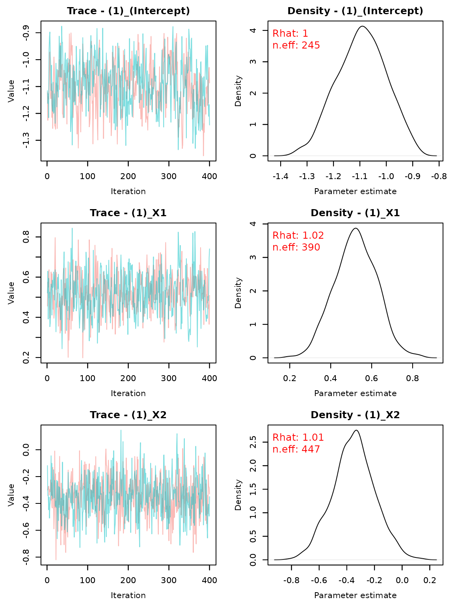
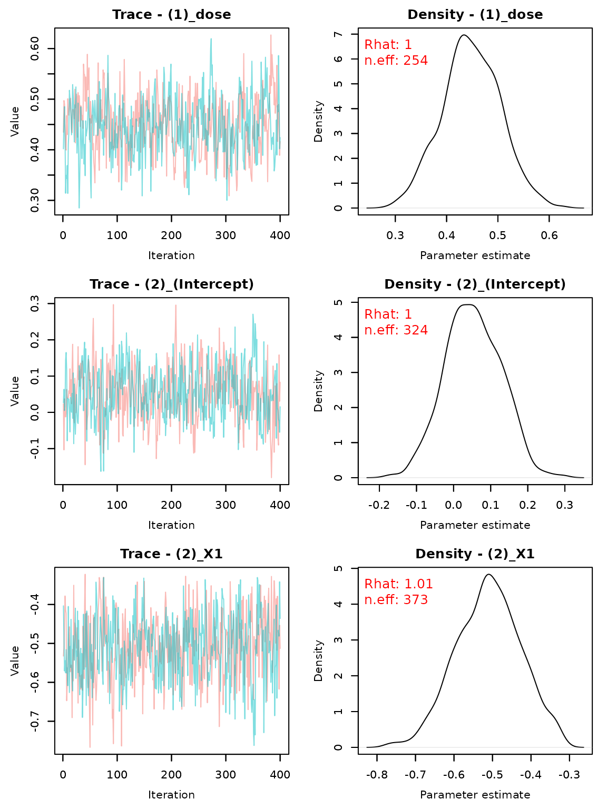

Conditional logistic regression
Again, we first fit models including a quadratic exposure term by
setting deg=2.
set.seed(3301)
fit.ameras.clogit <- ameras(Y="Y.clogit", dosevars=dosevars, X=c("X1","X2"), data=data,
family="clogit", deg=2, doseRRmod = "EXP", setnr="setnr",
methods=c("RC", "ERC", "MCML", "FMA", "BMA"), niter.BMA = 5000,
nburnin.BMA = 1000, CI=c("wald.orig","percentile"))
#> Note: BMA may require extensive computation time in the order of multiple hours
#> Fitting RC
#> Fitting ERC
#> Fitting MCML
#> Fitting FMA
#> Fitting BMA
#> Defining model
#> Building model
#> Setting data and initial values
#> Running calculate on model
#> [Note] Any error reports that follow may simply reflect missing values in model variables.
#> Checking model sizes and dimensions
#> [Note] This model is not fully initialized. This is not an error.
#> To see which variables are not initialized, use model$initializeInfo().
#> For more information on model initialization, see help(modelInitialization).
#> Compiling
#> [Note] This may take a minute.
#> [Note] Use 'showCompilerOutput = TRUE' to see C++ compilation details.
#> Compiling
#> [Note] This may take a minute.
#> [Note] Use 'showCompilerOutput = TRUE' to see C++ compilation details.
#> running chain 1...
#> |-------------|-------------|-------------|-------------|
#> |-------------------------------------------------------|
#> running chain 2...
#> |-------------|-------------|-------------|-------------|
#> |-------------------------------------------------------|
summary(fit.ameras.clogit)
#> Call:
#> ameras(data = data, family = "clogit", Y = "Y.clogit", dosevars = dosevars,
#> X = c("X1", "X2"), setnr = "setnr", methods = c("RC", "ERC",
#> "MCML", "FMA", "BMA"), deg = 2, doseRRmod = "EXP", CI = c("wald.orig",
#> "percentile"), nburnin.BMA = 1000, niter.BMA = 5000)
#>
#> Total run time: 716.2 seconds
#>
#> Runtime in seconds by method:
#>
#> Method Runtime
#> RC 0.5
#> ERC 637.0
#> MCML 1.8
#> FMA 6.5
#> BMA 70.4
#>
#> Summary of coefficients by method:
#>
#> Method Term Estimate SE CI.lowerbound CI.upperbound Rhat n.eff
#> RC X1 0.54553 0.08896 0.37116 0.719888 NA NA
#> RC X2 -0.53392 0.11711 -0.76345 -0.304387 NA NA
#> RC dose 0.68029 0.10131 0.48173 0.878856 NA NA
#> RC dose_squared -0.05146 0.02242 -0.09540 -0.007522 NA NA
#> ERC X1 0.61917 0.09205 0.43876 0.799584 NA NA
#> ERC X2 -0.51784 0.11993 -0.75291 -0.282781 NA NA
#> ERC dose 0.35155 0.08030 0.19416 0.508940 NA NA
#> ERC dose_squared 0.03687 0.01013 0.01701 0.056735 NA NA
#> MCML X1 0.55083 0.08923 0.37594 0.725708 NA NA
#> MCML X2 -0.53547 0.11712 -0.76502 -0.305906 NA NA
#> MCML dose 0.69334 0.09315 0.51077 0.875908 NA NA
#> MCML dose_squared -0.05581 0.01950 -0.09404 -0.017584 NA NA
#> FMA X1 0.55052 0.08917 0.37652 0.724765 NA NA
#> FMA X2 -0.53471 0.11713 -0.76341 -0.306357 NA NA
#> FMA dose 0.69461 0.09617 0.50415 0.883034 NA NA
#> FMA dose_squared -0.05610 0.02045 -0.09714 -0.016029 NA NA
#> BMA X1 0.54909 0.09212 0.37679 0.736473 1.00 800.00
#> BMA X2 -0.53845 0.12233 -0.78635 -0.299339 1.00 800.00
#> BMA dose 0.70058 0.10236 0.48129 0.898905 1.00 154.00
#> BMA dose_squared -0.05764 0.02212 -0.10209 -0.013441 1.00 131.00
coef(fit.ameras.clogit)
#> RC ERC MCML FMA BMA
#> X1 0.54552627 0.61917374 0.55082666 0.55052070 0.54908986
#> X2 -0.53391889 -0.51784345 -0.53546549 -0.53471237 -0.53844738
#> dose 0.68029437 0.35155174 0.69333718 0.69461086 0.70058151
#> dose_squared -0.05145934 0.03687427 -0.05581249 -0.05609925 -0.05764133
traceplot(fit.ameras.clogit)

Without the quadratic term (deg=1):
set.seed(4401)
fit.ameras.clogit.lin <- ameras(Y="Y.clogit", dosevars=dosevars, X=c("X1","X2"), data=data,
family="clogit", deg=1, doseRRmod = "EXP", setnr="setnr",
methods=c("RC","ERC", "MCML", "FMA", "BMA"), niter.BMA = 5000,
nburnin.BMA = 1000, CI=c("wald.orig","percentile"))
#> Note: BMA may require extensive computation time in the order of multiple hours
#> Fitting RC
#> Fitting ERC
#> Warning in ameras.rc(family = family, dosevars = dosevars, data = data, :
#> WARNING: Hessian was not invertible or inverse was not positive definite,
#> variance matrix could not be obtained
#> Fitting MCML
#> Fitting FMA
#> Fitting BMA
#> Defining model
#> Building model
#> Setting data and initial values
#> Running calculate on model
#> [Note] Any error reports that follow may simply reflect missing values in model variables.
#> Checking model sizes and dimensions
#> [Note] This model is not fully initialized. This is not an error.
#> To see which variables are not initialized, use model$initializeInfo().
#> For more information on model initialization, see help(modelInitialization).
#> Compiling
#> [Note] This may take a minute.
#> [Note] Use 'showCompilerOutput = TRUE' to see C++ compilation details.
#> Compiling
#> [Note] This may take a minute.
#> [Note] Use 'showCompilerOutput = TRUE' to see C++ compilation details.
#> running chain 1...
#> |-------------|-------------|-------------|-------------|
#> |-------------------------------------------------------|
#> running chain 2...
#> |-------------|-------------|-------------|-------------|
#> |-------------------------------------------------------|
summary(fit.ameras.clogit.lin)
#> Call:
#> ameras(data = data, family = "clogit", Y = "Y.clogit", dosevars = dosevars,
#> X = c("X1", "X2"), setnr = "setnr", methods = c("RC", "ERC",
#> "MCML", "FMA", "BMA"), deg = 1, doseRRmod = "EXP", CI = c("wald.orig",
#> "percentile"), nburnin.BMA = 1000, niter.BMA = 5000)
#>
#> Total run time: 355.1 seconds
#>
#> Runtime in seconds by method:
#>
#> Method Runtime
#> RC 0.3
#> ERC 287.4
#> MCML 0.8
#> FMA 3.2
#> BMA 63.4
#>
#> Summary of coefficients by method:
#>
#> Method Term Estimate SE CI.lowerbound CI.upperbound Rhat n.eff
#> RC X1 0.5463 0.08890 0.3721 0.7206 NA NA
#> RC X2 -0.5231 0.11692 -0.7522 -0.2939 NA NA
#> RC dose 0.4725 0.04268 0.3888 0.5562 NA NA
#> ERC X1 0.6405 NA NA NA NA NA
#> ERC X2 -0.4907 NA NA NA NA NA
#> ERC dose 0.3430 NA NA NA NA NA
#> MCML X1 0.5514 0.08905 0.3769 0.7259 NA NA
#> MCML X2 -0.5191 0.11710 -0.7486 -0.2896 NA NA
#> MCML dose 0.4575 0.04293 0.3734 0.5417 NA NA
#> FMA X1 0.5515 0.08918 0.3764 0.7257 NA NA
#> FMA X2 -0.5186 0.11723 -0.7487 -0.2885 NA NA
#> FMA dose 0.4578 0.04287 0.3745 0.5421 NA NA
#> BMA X1 0.5468 0.08828 0.3823 0.7188 1.00 806.00
#> BMA X2 -0.5265 0.11725 -0.7787 -0.3116 1.00 907.00
#> BMA dose 0.4578 0.04323 0.3715 0.5430 1.00 549.00
coef(fit.ameras.clogit.lin)
#> RC ERC MCML FMA BMA
#> X1 0.5463374 0.6405011 0.5514108 0.5515131 0.5467938
#> X2 -0.5230641 -0.4906780 -0.5190952 -0.5186443 -0.5265150
#> dose 0.4724948 0.3429971 0.4575164 0.4578075 0.4577984
traceplot(fit.ameras.clogit.lin)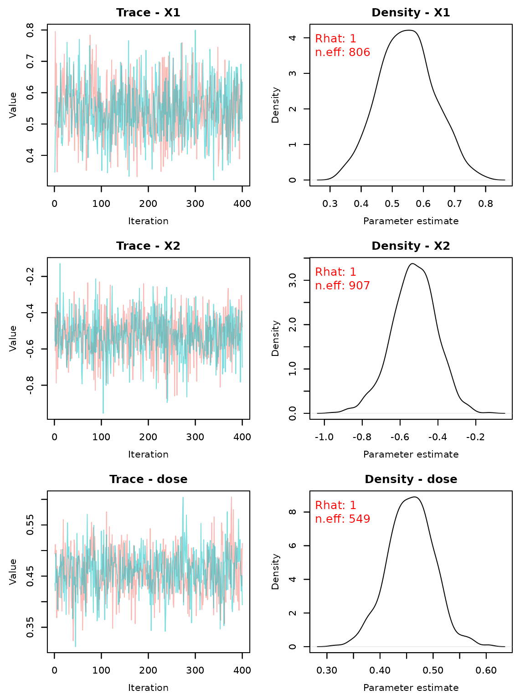
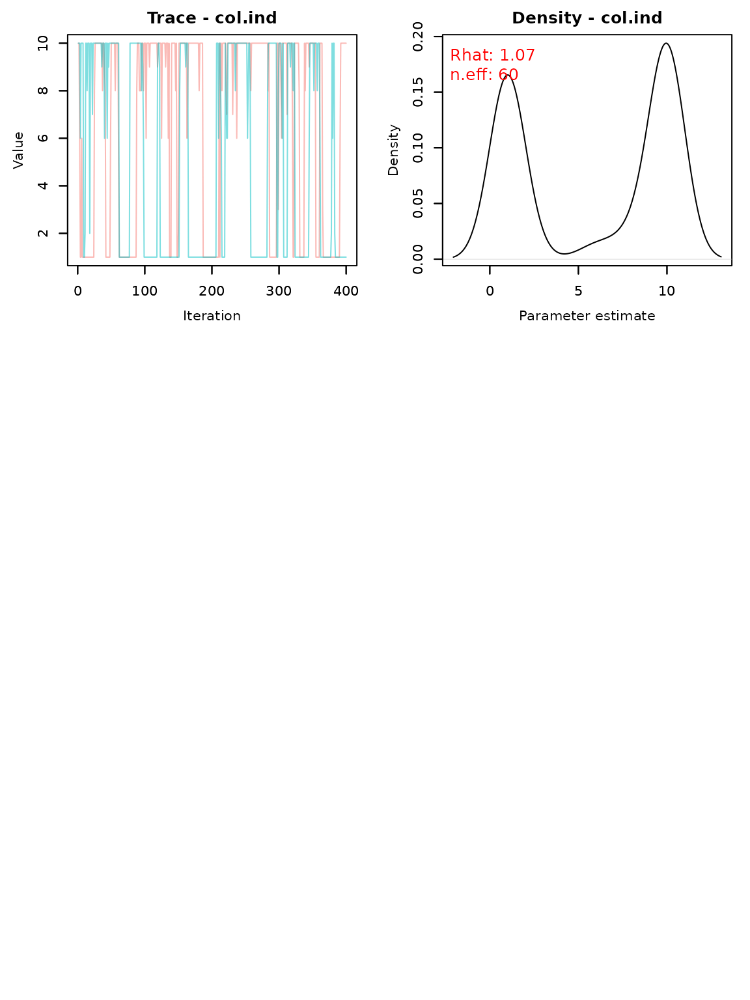